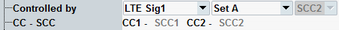

Carrier Aggregation
Most tests specified for signals with uplink carrier aggregation (CA) measure one carrier at a time. The tests per carrier are the same as for signals without carrier aggregation.
Only for signals with intra-band contiguous uplink CA, some tests measure all aggregated component carriers at the same time.
The BW classes are defined in 3GPP TS 36.101, section 5.6A.
BW classes supported by the measurement
Class | Carriers | Allocated RB | Configure CA mode | CA options |
|---|---|---|---|---|
A | 1 | 0 to 100 | "Off" | none |
B | 2 | 26 to 100 | "Intraband Cont. (BW Class B & C)" | FDD: R&S CMW-KM502 TDD: R&S CMW-KM552 |
C | 2 | 101 to 200 |
The following results are measured for one component carrier at a time. For synchronization, this carrier must contain allocated RBs.
- EVM, magnitude error, phase error
- I/Q diagram
- Modulation result tables
- Equalizer spectrum flatness
- Power dynamics
The spectrum results are measured for the combination of all carriers, the aggregated bandwidth.
- Spectrum ACLR
- Spectrum emission mask
The following results are measured for all carriers in parallel. There are separate results per component carrier.
- Inband emission diagram
- Power monitor
- RB allocation table
The basic measurement procedure is the same as for signals without carrier aggregation. Even the test setup is the same.
In addition, consider the following points:
- For a standalone measurement:
– Select the "Carrier Aggregation Mode" to enable carrier aggregation. – Configure the carrier center frequencies according to the 3GPP rules for intra-band contiguous CA. An automatism facilitates the configuration, so that you need to configure only the frequency of one carrier and can adjust the other carriers via a button. - For a combined signal path measurement:
– In the signaling application, configure an intra-band contiguous uplink CA set with two carriers. Refer to the signaling application documentation for details. – In the measurement, select the carrier set via "Controlled by". 
The measurement automatically sets the "Carrier Aggregation Mode" accordingly.– Use the CC2 frame trigger signal provided by the signaling application. The CC1 frame trigger signal is not suitable for contiguous CA measurements. - Select a "Measurement Carrier". This carrier is used for synchronization, so it must have allocated RBs. The selected carrier is evaluated by single-carrier measurements, for example for measurement of modulation or power dynamics results.
- Select the local oscillator location of the UE transmitter.